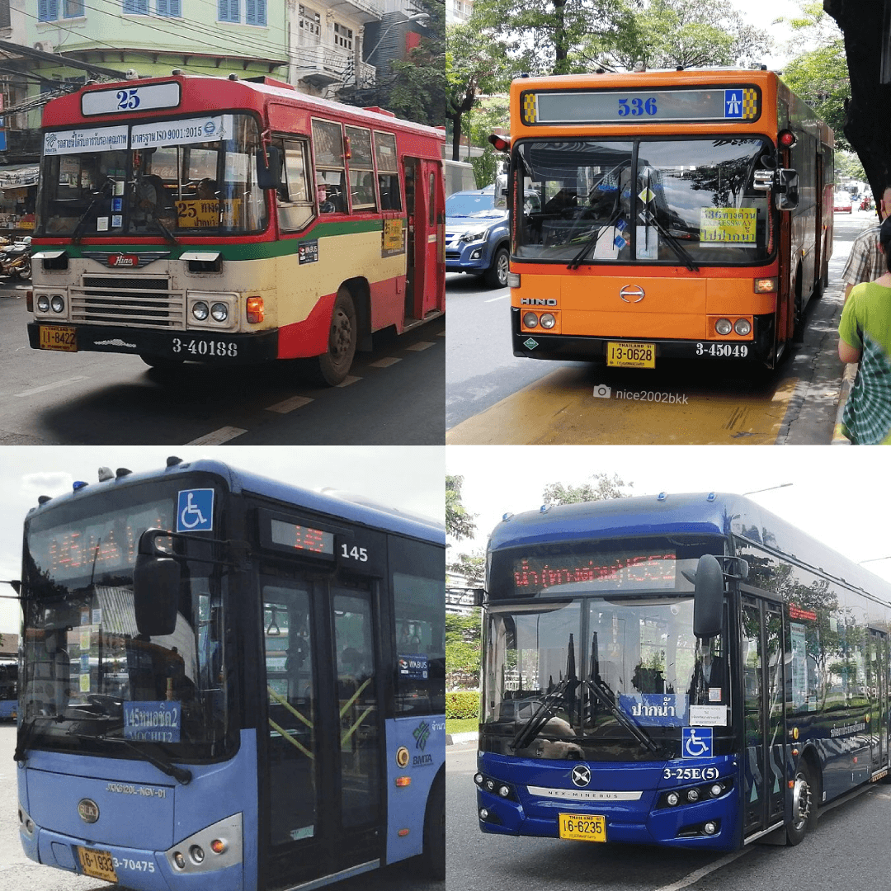

รถเมล์แต่ละสีต่างกันยังไง
รถเมล์สีหลัก ๆ ที่เราเห็นวิ่งจากปากน้ำตอนนี้จะมีอยู่ 4 สี คือ แดง, เหลือง-ส้ม, ฟ้า และน้ำเงิน โดยสีจะเป็นสิ่งที่บ่งบอกว่าเป็นรถของบริษัทไหน และแบ่งรถร้อน-รถปรับอากาศ
• แดง : รถร้อน (ขสมก.)
• เหลือง-ส้ม, ฟ้า : รถปรับอากาศ (ขสมก.)
• น้ำเงิน : รถปรับอากาศ (ไทย สมายล์ บัส)